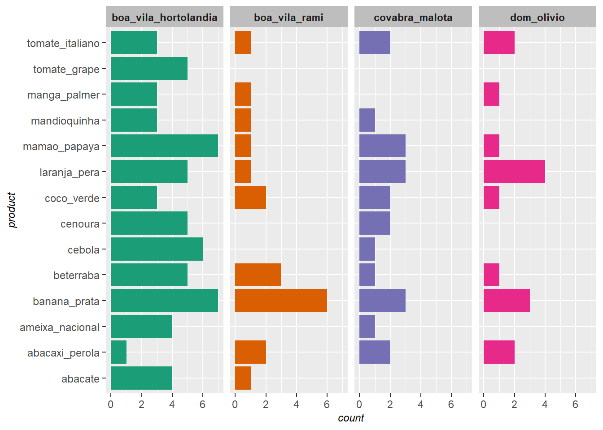
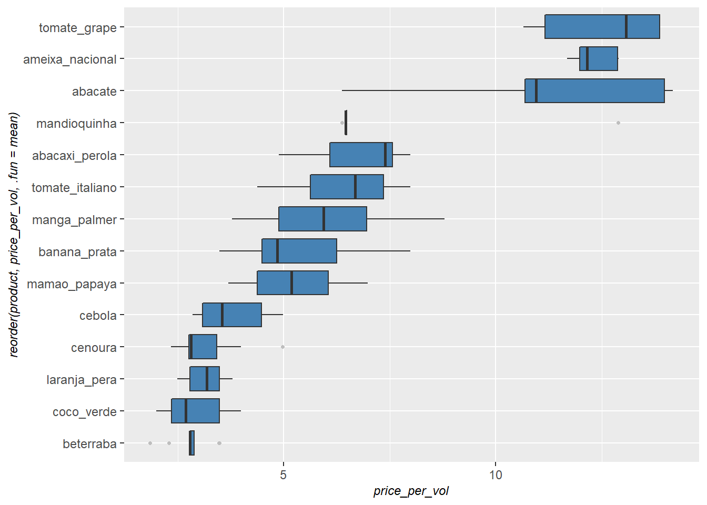
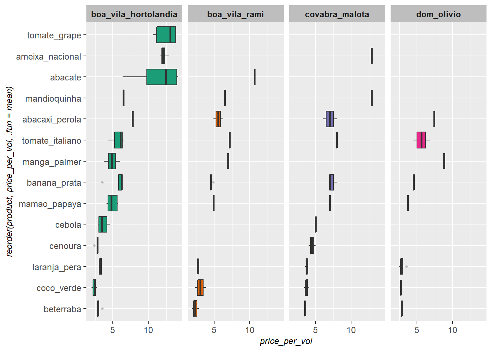
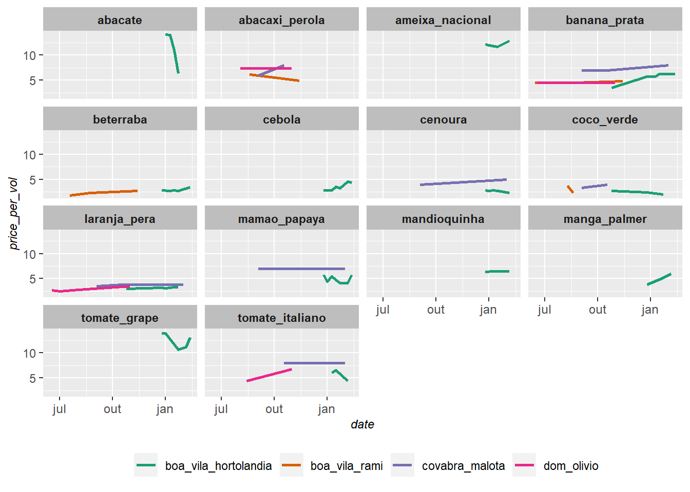

Volatilidade no Preços dos Alimentos - Jundiaí
knitr::opts_chunk$set(
message = F,
warning = F,
echo = T,
eval = T,
fig.align = "center"
)Após muitas idas ao mercado, fiquei interessado em saber como os preços dos alimentos oscilam ao longo do tempo e também em como eles se diferenciam de um mercado para outro (especificamente em Jundiaí). Por isso, neste post eu vou analisar um dataset que eu mesmo venho desenvolvendo, que mostra o preço dos alimentos que mais são usados em minha casa.
Com este script, poderei apenas atualizar o post para pegar a última versão do dataset e acompanhar esta variação de preços. Vamos ver se conseguimos extrair algum insight ao final.
Para esta tarefa, vou usar os seguintes pacotes:
library(tidyverse)
library(patchwork)
# Função para padronizar o design dos gráficos
theme_graph <- function(){
theme(
plot.title = element_text(size = 16),
plot.subtitle = element_text(size = 12),
plot.caption = element_text(face = "italic", size = 9),
axis.text = element_text(size = 9),
axis.title = element_text(face = "italic", size = 9),
strip.background = element_rect(fill = "grey"),
strip.text = element_text(face = "bold"),
legend.position = "bottom",
legend.title = element_blank()
)
}O dataset está sendo atualizado em meu repositório do github. Se caso quiser acessá-lo pelo R, basta usar o comando abaixo:
dataset <- readr::read_csv(file = "https://raw.githubusercontent.com/FranciscoPiccolo/franciscopiccolo.github.io/master/datasets/2020-06-20-grocery_price_volatility/dataset_1.csv")Para este estudo, vou preferir olhar apenas para produtos que possuem mais que 3 observações, ou seja, que comprei mais que 4 vezes no período. O código abaixo irá listar os produtos que precisam ser removidos da análise.
dataset %>%
group_by(product) %>%
summarise(rows = n()) %>%
filter(rows <= 4) %>%
select(product) -> low_sample_productCom esta lista de ‘low_sample_product’, podemos ajustar o dataset filtrando estes produtos.
dataset <-
dataset %>%
mutate(price_per_vol = price/volume_gm_ml) %>%
filter(!product %in% c(low_sample_product$product))Análise Exploratória do Dataset
Vamos entender melhor este dataset antes de focar na volatilidade. Primeiro, vamos ver o período de compra, os mercados e produtos considerados.
dataset$price <- as.numeric(dataset$price)
dataset %>%
group_by() %>%
summarise(first_date = min(date),
last_date = max(date)) %>%
tibble::tibble()## # A tibble: 1 x 2
## first_date last_date
## <date> <date>
## 1 2020-06-14 2021-02-13Observações por Produto e Local de Compra
dataset %>%
group_by(local,product) %>%
summarise(count = n()) %>%
ggplot2::ggplot()+
geom_col(mapping = aes(x = product, y = count, fill = local))+
scale_fill_brewer(type = "qual", palette = 2)+
theme_graph()+
theme(legend.position = "none")+
coord_flip()+
facet_grid(~local)
Variabilidade
dataset %>%
ggplot2::ggplot()+
geom_boxplot(mapping = aes(x = reorder(product,price_per_vol, .fun = mean), y = price_per_vol),
fill = "steel blue",
outlier.shape = 20,
outlier.color = "grey")+
coord_flip()+
theme_graph()
Variabilidade por Estabelecimento
dataset %>%
ggplot2::ggplot()+
geom_boxplot(mapping = aes(x = reorder(product,price_per_vol, .fun = mean), y = price_per_vol, fill = local),
outlier.shape = 20,
outlier.color = "grey")+
scale_fill_brewer(type = "qual", palette = 2)+
coord_flip()+
facet_grid(~local)+
theme_graph()+
theme(legend.position = "none")
Série Temporal dos Preços por Produto e Estabelecimento
dataset %>%
ggplot2::ggplot()+
geom_line(mapping = aes(x = date, y = price_per_vol, group = local, color = local),
size = 1)+
scale_color_brewer(type = "qual", palette = 2)+
theme_graph()+
facet_wrap(~product)